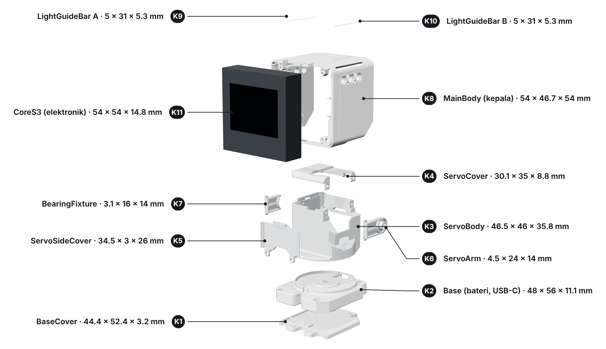
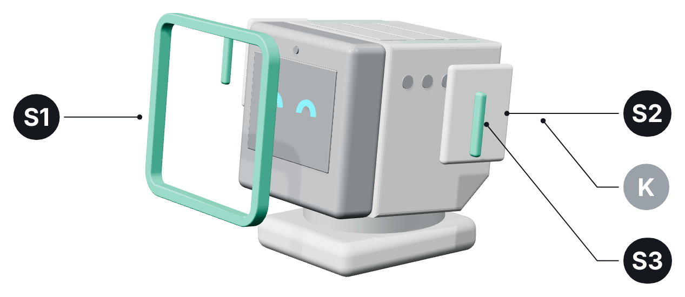
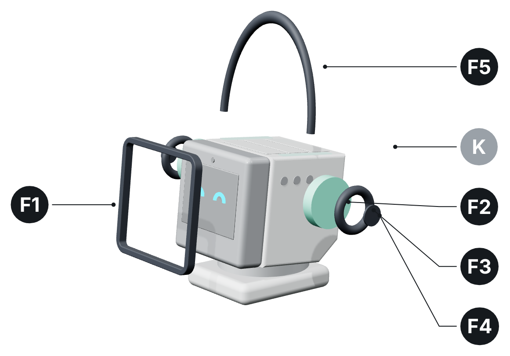
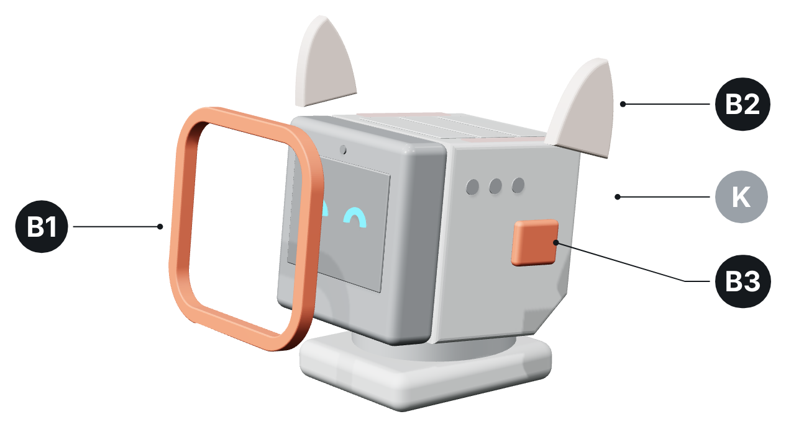
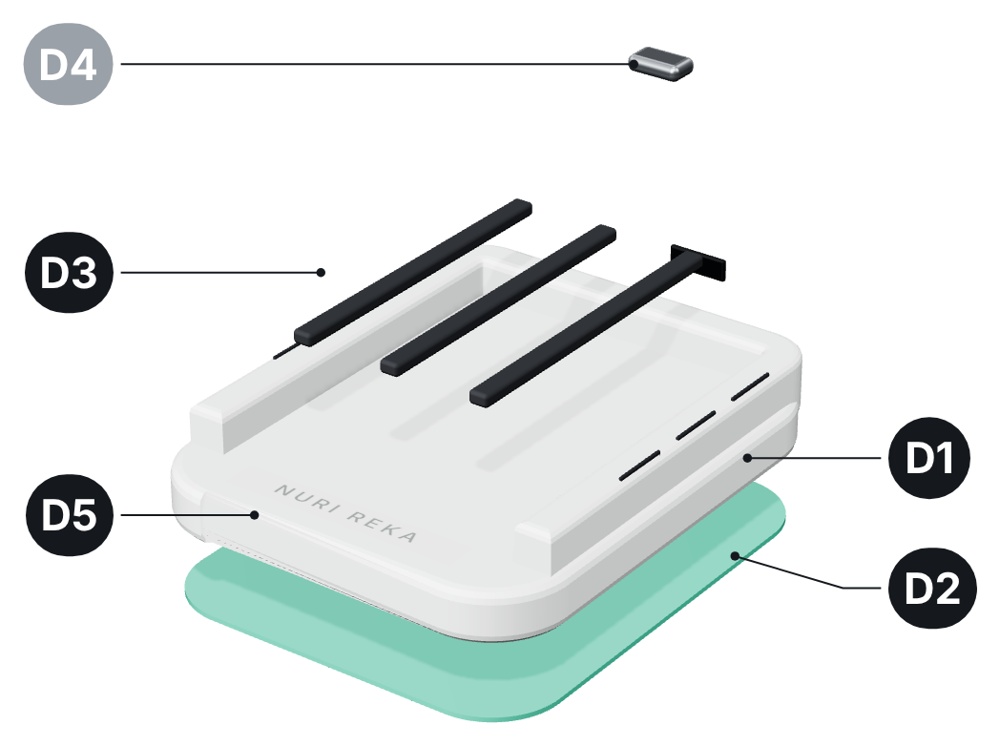
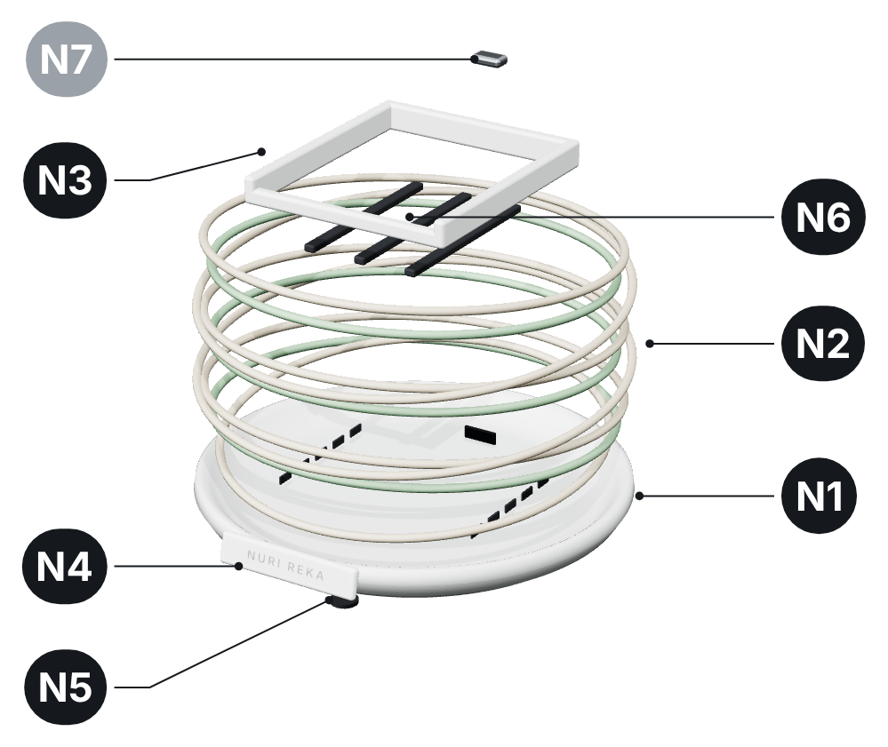

NURI ialah aksesori untuk robot M5Stack StackChan K151. Robot itu sendiri dibeli siap; kami cuma perlukan bahagian plastik yang dipasang padanya:

Bentuk dan saiz dari fail struktur rasmi M5Stack (github.com/m5stack/M5_Hardware, lesen MIT). Kedudukan dalam pecahan ialah ilustrasi; saiz bahagian adalah sebenar. Saiz keseluruhan robot: 54 × 61.5 × 70.5 mm.
Gambar tunjuk satu sisi sahaja; bahagian ×2 ada di kedua-dua sisi kepala. K = robot K151 asal, tidak dicetak.
Warna dalam gambar ialah contoh (Signature Pearl, Focus Graphite, Buddy Coral).

| Kod | Bahagian | Qty | Saiz (mm) | Warna |
|---|---|---|---|---|
| S1 | Bingkai muka | 1 | 60 × 57 × 4.3 | Aksen |
| S2 | Panel sisi | 2 | 30 × 25 × 3.2 | Sut |
| S3 | Jalur aksen (sisip ke S2) | 2 | 19 × 2.4 × 3.4 | Aksen |
5 bahagian · anggaran 8–10 g PETG

| Kod | Bahagian | Qty | Saiz (mm) | Warna |
|---|---|---|---|---|
| F1 | Bingkai muka | 1 | 59 × 57 × 4.3 | Sut |
| F2 | Cawan telinga | 2 | Ø25 × 6 | Aksen |
| F3 | Cincin kusyen | 2 | Ø23 × 4.4 | Sut · TPU pilihan |
| F4 | Penutup cawan | 2 | Ø10 × 1 | Sut |
| F5 | Lengkung kepala | 1 | 72 × 55 × 4 | Sut |
9 bahagian · paling berat, anggaran 11–14 g · F5 perlu kuat (lentur)

| Kod | Bahagian | Qty | Saiz (mm) | Warna |
|---|---|---|---|---|
| B1 | Bingkai muka | 1 | 62 × 58 × 4.3 | Aksen |
| B2 | Telinga | 2 | 26 × 20 × 4.8 | Sut |
| B3 | Pemegang telinga | 2 | 14 × 12 × 3.4 | Aksen |
5 bahagian · anggaran 8–10 g PETG
Dock ada palam USB-C yang masuk ke port tapak K151.
Palam dan papan input elektronik dibekalkan oleh kami, bukan dicetak.

| Kod | Bahagian | Qty | Saiz (mm) | Bahan · warna | Orientasi |
|---|---|---|---|---|---|
| D1 | Badan dock | 1 | 61 × 74 × 17 | PETG · putih dock | Tegak, tapak di plat · tanpa sokongan |
| D2 | Jalur aksen | 1 | 58.5 × 71.3 × 0.7 | PETG · aksen | Tukar filamen pada lapisan, atau sisipan |
| D3 | Rusuk sokongan | 3 | 49 × 3 × 2 | TPU 95A · hitam | Rata |
| D5 | Ukiran "NURI + nama" | 1 | huruf 5 mm | Laser / 2 warna | Pada bibir depan D1 |
| D4 | Palam USB-C | 1 | — | Dibekalkan oleh kami · tidak dicetak | |
Anggaran 25–30 g PETG + 2 g TPU

| Kod | Bahagian | Qty | Saiz (mm) | Bahan · warna | Orientasi |
|---|---|---|---|---|---|
| N1 | Mangkuk | 1 | Ø109 × 11.6 | PETG · putih dock | Tegak · lereng < 45°, tanpa sokongan |
| N2 | Cincin anyaman | 9 | Ø98–108, tiub Ø2.1 | PETG · oat + aksen | Rata · 0.12 mm, 100% padat |
| N3 | Dinding penempat | 1 | 61 × 69 × 7 | PETG · putih dock | Tegak · boleh dicetak bersama N1 |
| N4 | Tag nama + ukiran | 1 | 38 × 8 × 3.3 | PETG · putih dock | Rata, muka teks ke atas |
| N5 | Tapak getah | 3 | Ø7 × 1 | TPU 95A · hitam | Rata |
| N6 | Rusuk sokongan | 3 | 49 × 3 × 2 | TPU 95A · hitam | Rata |
| N7 | Palam USB-C | 1 | — | Dibekalkan oleh kami · tidak dicetak | |
Anggaran 40–45 g PETG + 3 g TPU · N2 rapuh, sila bungkus berasingan
| Perkara | Sut | Dock |
|---|---|---|
| Bahan | PETG matte | PETG matte · TPU 95A untuk rusuk/tapak |
| Muncung | 0.4 mm | 0.4 mm |
| Lapisan | 0.12 mm | 0.16–0.20 mm |
| Dinding | 3 | 4 |
| Infill | 15–20% (hampir padat) | 20% gyroid |
| Atas/bawah | 5 lapisan | 5 lapisan |
| Sokongan | Tiada | Tiada |
| Toleransi | ±0.15 mm | ±0.2 mm |
| Kemasan | Seam di belakang, tiada stringing, buang tepi tajam. Muka depan tiada kesan sokongan. | |
Jangan guna PLA: dock panas semasa mengecas, dan robot mungkin diletak berhampiran tingkap.
| Pilihan | Warna sut | Warna aksen |
|---|---|---|
| Pearl | #EEF1F0 | #4FBF9F |
| Graphite | #3B4149 | #86D9C1 |
| Coral | #F6E6DE | #E9785A |
| Dock | #F0F2F2 | Aksen ikut warna sut |
| Nest N2 | Oat #D8CBB6 | Campur dengan aksen |
Pilih filamen PETG matte yang paling hampir. Sila hantar gambar swatch untuk kelulusan sebelum batch.
Ujian 1–5 kami buat dengan robot sebenar; kedai cuma perlu cetak dan semak kemasan.
Hubungi: Cipta Robo · WhatsApp +60 19-940 0004 · ciptarobo.com